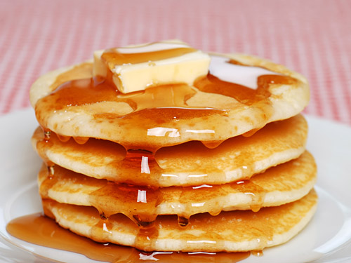

Pancakes Recipe

Recipe
Say goodbye to the boxed pancake mix. Everything you need to make delicious pancakes is probably sitting in your kitchen right now. This recipe is easy! The pancakes aren’t too sweet and are lightly scented with vanilla. They are delicious and they are easily adapted to what you have in your kitchen. Let’s do this!
Ingredients
- 1 cup all-purpose flour
- 2 tablespoons white sugar
- 2 teaspoons baking powder
- 1 teaspoon salt
- 1 egg, beaten
- 1 cup milk
- 2 tablespoons vegetable oil
Steps:
- In a large bowl, mix flour, sugar, baking powder and salt. Make a well in the center, and pour in milk, egg and oil. Mix until smooth.
- Heat a lightly oiled griddle or frying pan over medium high heat. Pour or scoop the batter onto the griddle, using approximately 1/4 cup for each pancake. Brown on both sides and serve hot.